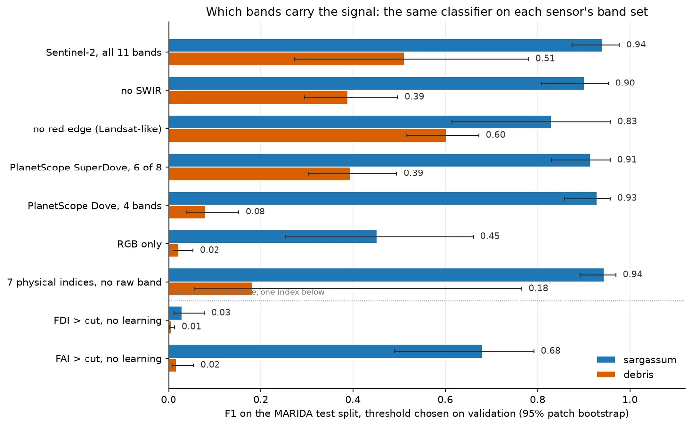
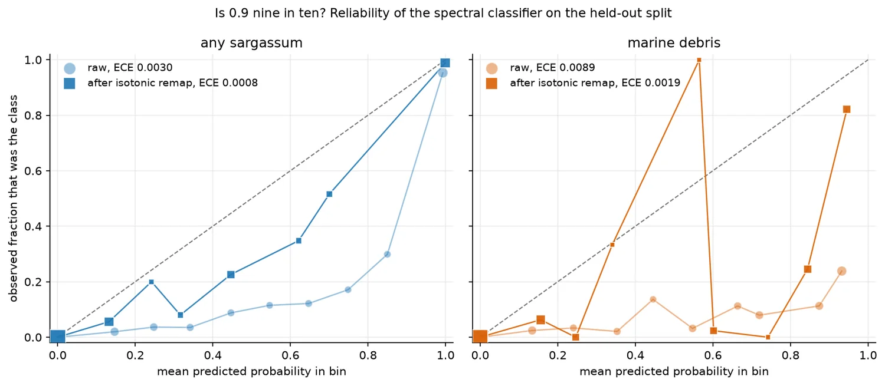
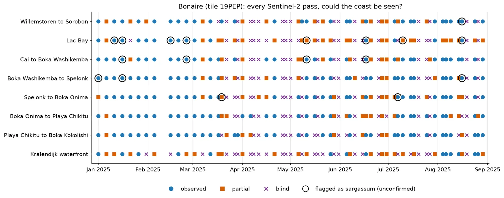
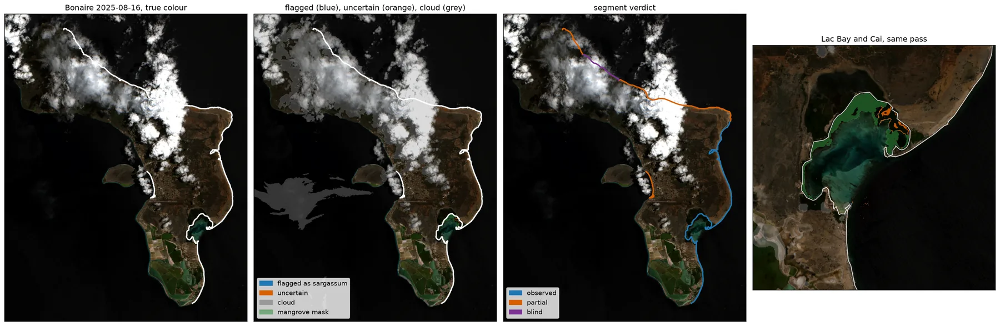
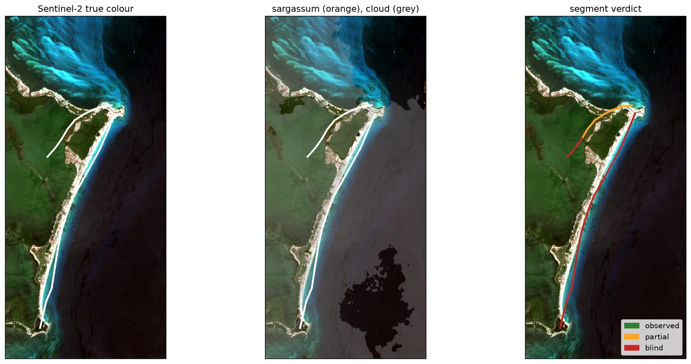
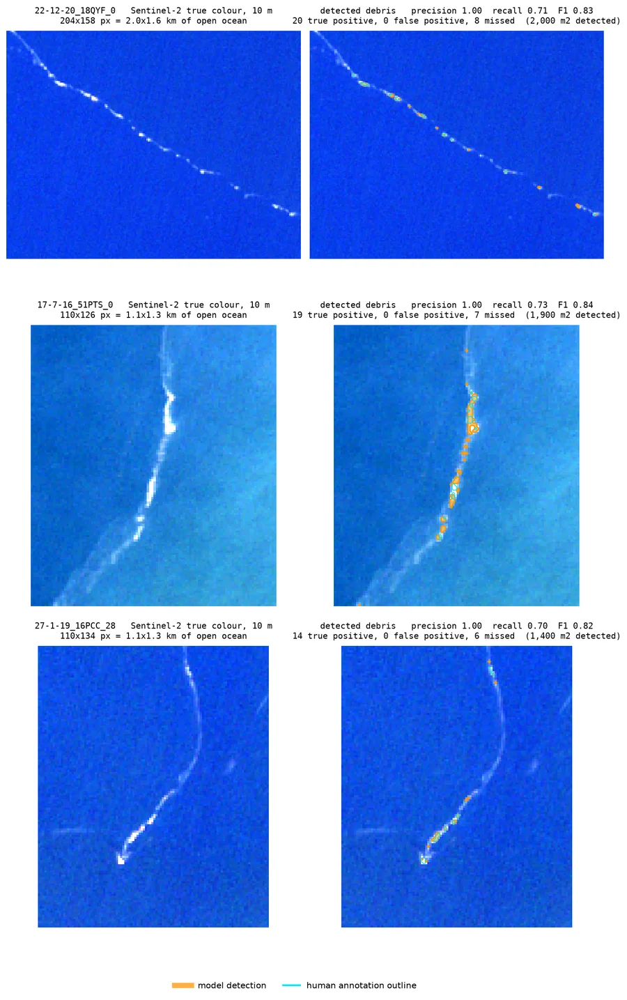
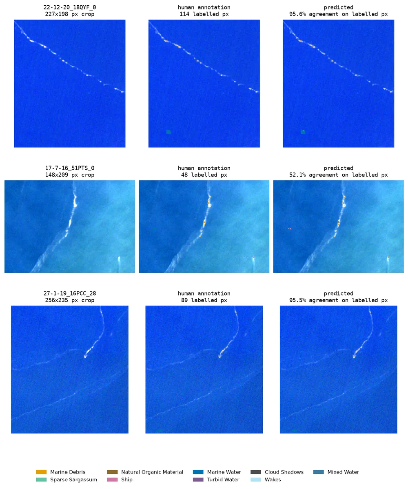
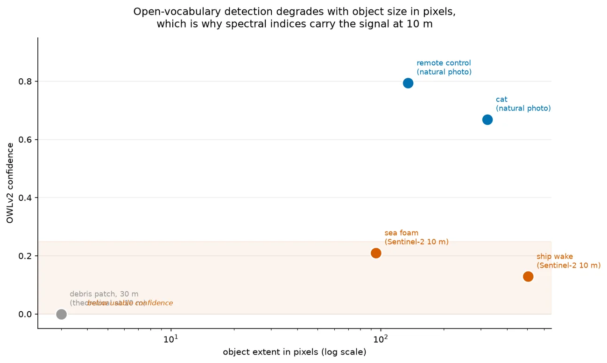

Sargassum and marine debris detection on free Sentinel-2 imagery.
mdebris reads Sentinel-2 scenes over HTTP, with no account, API key or GPU, and classifies every sea pixel with a model trained on the public MARIDA benchmark. It reports sargassum with a calibrated probability, keeps an explicit uncertain band, and says which stretches of coast the clouds hid on each pass.
View the code on GitHub Quick start
Version 2.0.0, MIT license, Python 3.11 and 3.12.
- Sargassum, calibrated probability 0.9 or more
- Uncertain, between 0.056 and 0.9
- Clear water
- Cloud, so the sea was not seen
What it does
The project started as a rebuild of NASA IMPACT's 2019 marine debris detector, which needed commercial 3 m Planet imagery and TensorFlow 1.14. This version runs on free 10 m Sentinel-2 data and current Python. Measuring it showed that the same model finds sargassum far better than it finds debris, so both are reported, each with its own error bars.
- Free imagery, read in place
- STAC search on Microsoft Planetary Computer, with AWS earth-search as a fallback. Cloud-optimised GeoTIFFs are read with HTTP range requests, so screening a coastline pulls kilobytes, not whole scenes.
- A per-pixel classifier
- Gradient boosting over the 11 Sentinel-2 bands and seven spectral indices (FDI, FAI, NDVI, NDWI, PI, kNDVI, MNDWI), trained on MARIDA's scene-grouped split in 76 seconds on a CPU.
- Probabilities you can read
- An isotonic remap fitted on the validation split, stored as JSON breakpoints rather than a pickle. Each pixel is called sargassum, uncertain or clear.
- Answers per beach
- Detections are rolled onto named stretches of coast as coverage, metres of affected shoreline, and whether the stretch was observed, partly observed or blind on that pass.
- Whole seasons
- Every pass over an island for a season, with the longest gap between usable looks and a per-pixel check for things that never move, which are not sargassum.
- An open-vocabulary path
- OWLv2 detection and SAM 2 masks behind a spectral cascade, kept for rejecting ships and wakes and for imagery fine enough for them to work.
Everything runs from the mdebris command line or a FastAPI service, and every figure and table on this page is regenerated by a script in the repository.
Results
Scores are on MARIDA's held-out test split: 194,863 labelled pixels in 359 patches from scenes the model never trained on. Thresholds were chosen on the validation split, and the intervals are 95% bootstrap intervals over test patches, because pixels in one patch share a scene and an annotator.
| Target | Precision | Recall | F1 | 95% interval | Test pixels |
|---|---|---|---|---|---|
| Sargassum, dense or sparse | 0.952 | 0.928 | 0.940 | 0.87 to 0.98 | 1,641 |
| Marine debris | 0.414 | 0.667 | 0.511 | 0.27 to 0.78 | 381 |
Same model, same 18 features, same split. Sargassum floats in mats tens of metres across and carries a chlorophyll red edge, so it fills pixels. Debris is thin, low-contrast filaments, and at 10 m most litter is far smaller than a pixel. The debris interval is wide because MARIDA has 381 debris test pixels in a handful of patches.


Is 0.9 nine in ten?
For sargassum, nearly. After the isotonic remap, a cut at a calibrated 0.9 gives precision 0.989 at recall 0.907 on the test split. The debris probability is not trustworthy as a number: raw scores between 0.9 and 1.0 were debris 24% of the time.
| Task | ECE raw | ECE calibrated | Precision at 0.9 | Recall at 0.9 |
|---|---|---|---|---|
| Any sargassum | 0.0030 | 0.0008 | 0.989 | 0.907 |
| Marine debris | 0.0089 | 0.0019 | 0.822 | 0.496 |


Bonaire, January to August 2025
Every Sentinel-2 pass over Bonaire for eight months, 64 of them, over seven windward stretches of coast and the leeward Kralendijk waterfront as a control. The question a monitoring plan has to answer first is how often the coast can be seen at all.
| Stretch of coast | Usable passes | Longest gap, days | Passes with a detection | Pixels ever flagged |
|---|---|---|---|---|
| Willemstoren to Sorobon | 72% | 15 | 1 | 13 |
| Lac Bay | 64% | 20 | 24 | 1,167 |
| Cai to Boka Washikemba | 72% | 15 | 10 | 285 |
| Boka Washikemba to Spelonk | 70% | 15 | 3 | 41 |
| Spelonk to Boka Onima | 73% | 15 | 2 | 24 |
| Boka Onima to Playa Chikitu | 73% | 15 | 0 | 5 |
| Playa Chikitu to Boka Kokolishi | 73% | 15 | 0 | 13 |
| Kralendijk waterfront, leeward control | 56% | 20 | 0 | 0 |
The windward stretches were usable on 64% to 73% of passes, and the longest run without a usable look was 15 to 20 days. Lac Bay had no fully observed pass between 12 March and 17 June. The leeward control was flagged on no pixel in 64 passes. Most flagged pixels sit in the sheltered back-bay of Lac and on the reef flat at Cai, and none of them has been checked on the ground.


Full tables, the comparison with LANOT's published operator and the beach briefs for Cancun are in docs/RESULTS.md. The interactive report has the earlier measurements, including an explorer for the FDI threshold over the measured water distribution.
Figures
Every image is output of this pipeline, regenerated by the scripts in the repository. Select one to open it at full resolution.










Quick start
Python 3.11 or 3.12. Installing the CPU build of PyTorch first avoids about 2.5 GB of CUDA libraries a laptop cannot use.
-
Install.
git clone https://github.com/danieltyukov/marine-debris-ml-model.git cd marine-debris-ml-model python -m venv .venv && source .venv/bin/activate pip install --index-url https://download.pytorch.org/whl/cpu torch torchvision pip install -e ".[all]" -
Look at a bundled scene. Two Sentinel-2 chips ship with the package, so this works offline.
mdebris samples mdebris indices --sample accra -
Train the classifier. Downloads MARIDA (1.1 GB) on the first run, fits in about 76 seconds on a CPU, and writes
models/marida_spectral.joblib. The trained model is never committed: joblib files are pickles.python scripts/train_marida.py python scripts/eval_band_ablation.py python scripts/eval_calibration.py -
Run a season. Every pass over Bonaire from January to August 2025, read over HTTP. It takes about 17 minutes and resumes where it stopped.
python scripts/make_bonaire_segments.py --fetch python scripts/run_bonaire_season.py
The open-vocabulary path downloads its model weights on first use. This searches for a scene off Accra, screens it with the spectral cascade and runs the detector on what is left:
mdebris detect --bbox -0.35,5.45,-0.05,5.65 --start 2024-01-01 --end 2024-06-30mdebris --help lists the other commands.
How it works
A Sentinel-2 scene is 120 megapixels and most of it is land, cloud or empty water. The pipeline narrows down with cheap arithmetic before it spends anything, and keeps every step's mask so the final answer can say what was not seen.
- Search. A STAC query for Sentinel-2 L2A over the area and dates, with no credentials.
- Read. Windowed reads of the cloud-optimised GeoTIFFs, only the bytes inside the area, with an explicit reflectance offset per processing baseline.
- Mask. Cloud from the scene classification layer. Land from an OpenStreetMap coastline polygon buffered 15 m seaward, because MARIDA has no land class and bright sand looks like floating biomass. The cascade's NDWI water gate does a similar job but also removes dense sargassum, so the season runner does not use it.
- Describe each pixel. 11 reflectance bands and seven indices. The most informative feature is the red-edge band B05, ahead of every named index.
- Classify. A gradient-boosting model trained on MARIDA's 15 sea-surface classes, including the confusers: cloud, foam, wakes, ships and sediment.
- Calibrate. The isotonic remap turns the score into a probability. At 0.9 or more a pixel is sargassum. Below 0.056, an edge chosen on the validation split to keep 98% of true sargassum, it is clear. In between it is uncertain.
- Roll up. Pixels become per-segment coverage, affected shoreline and observability, and a season becomes gap statistics per stretch of coast.
The open-vocabulary detector sits behind the same masks as a cascade: on a coastal scene off Accra it skipped 44% of detector calls. At 10 m it localises poorly, so it is kept for what it still does well, telling a ship or a wake from debris, and for imagery at 3 m or finer. docs/ARCHITECTURE.md has the modules, the cascade measurements and the design reasoning.
Limitations
- Debris detection is weak at 10 m. Most litter is far smaller than a pixel, and the held-out debris F1 of 0.51 has an interval from 0.27 to 0.78.
- No detection has been validated in the field. MARIDA's labels are annotated Sentinel-2 pixels, not observations from a boat or a beach, and a per-pixel score is not a landfall forecast.
- MARIDA has Caribbean sargassum labels (every sargassum pixel in its test split is off Guatemala or Honduras) but none from Aruba, Bonaire or Curaçao, and no shallow lagoon. What the classifier flags inside Lac Bay has not been checked on the ground: it may be sargassum held in the bay, or the lagoon bottom.
- Probabilities are calibrated on MARIDA only. Over another coast a calibrated 0.9 is an estimate until pixels from that coast have been checked.
- Optical imagery cannot see through cloud. On Bonaire in 2025 the longest wait for a usable look was 20 days.
- Per-pixel spectra cannot tell a vessel from a debris raft.
Data and citation
| Used for | Source | Terms |
|---|---|---|
| Imagery | Sentinel-2 L2A via Microsoft Planetary Computer, AWS earth-search as fallback | Copernicus, free and open, no account |
| Training and benchmark | MARIDA, the Marine Debris Archive | CC BY 4.0 |
| Coastlines and segments | OpenStreetMap | ODbL |
| Optional commercial imagery | Planet | Needs PL_API_KEY |
If you use this software, cite it with the metadata in CITATION.cff (GitHub shows it under "Cite this repository"), and cite MARIDA for the training data:
@article{kikaki2022marida,
author = {Kikaki, Katerina and Kakogeorgiou, Ioannis and Mikeli, Paraskevi
and Raitsos, Dionysios E. and Karantzalos, Konstantinos},
title = {MARIDA: A benchmark for Marine Debris detection from
Sentinel-2 remote sensing data},
journal = {PLOS ONE},
volume = {17},
number = {1},
pages = {e0262247},
year = {2022},
doi = {10.1371/journal.pone.0262247}
}The Floating Debris Index is from Biermann et al. (2020), Scientific Reports 10, 5364. Each index function in mdebris.indices.spectral cites its source.